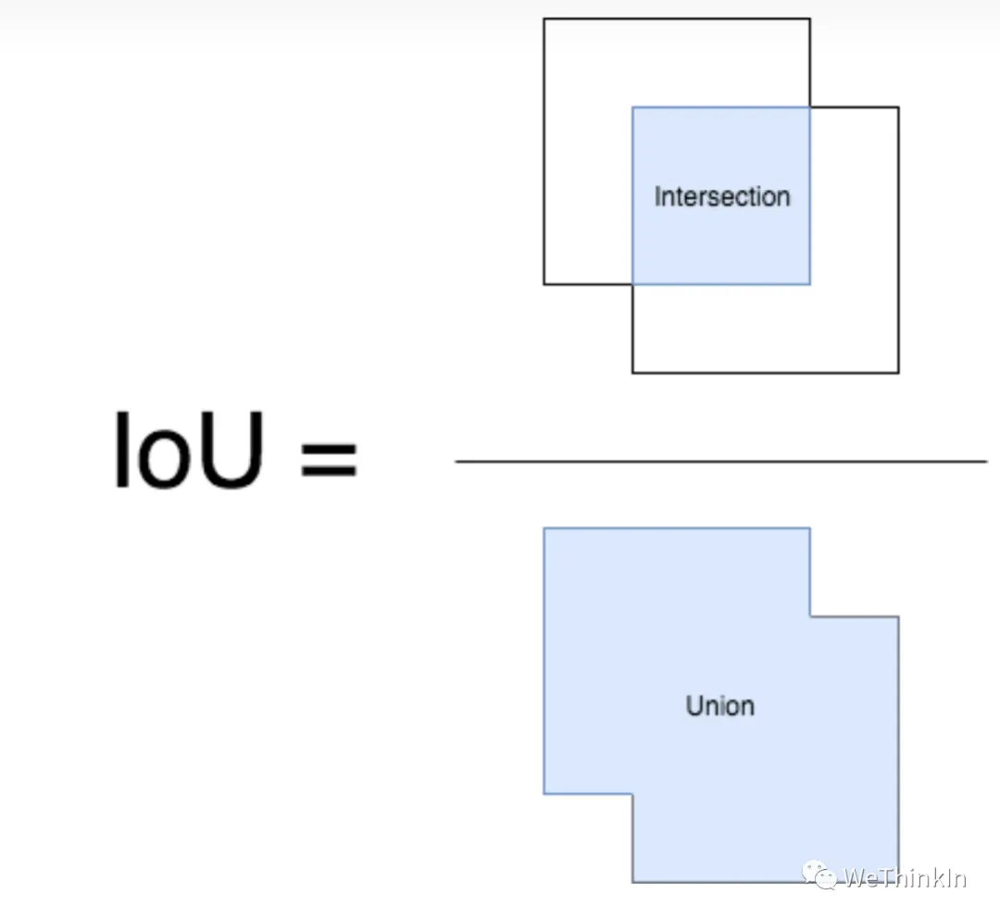
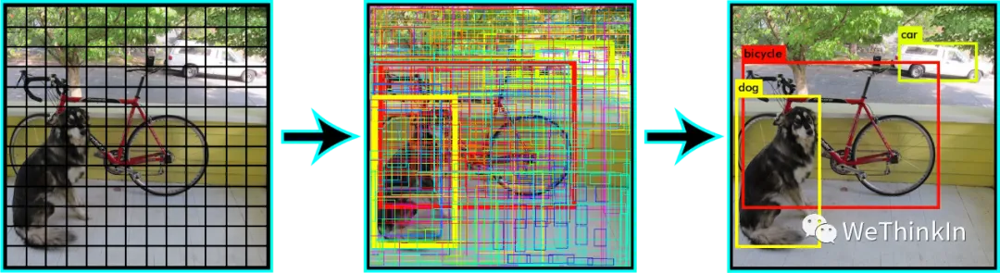
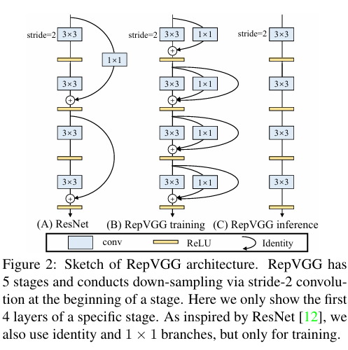

2D 目标检测
相关链接：
一、目标检测核心概念
1.1 交并比（IOU）
IoU（Intersection over Union）即交并比，是 GT bbox 与 pred bbox 交集的面积 / 并集的面积。 用于衡量两个矩形框的相似度。

下面我们用坐标（top，left，bottom，right），即左上角坐标，右下角坐标。从而可以在给定的两个矩形中计算 IOU 值。
def compute_iou(rect1,rect2):
"""
计算两个矩形的 IoU。
坐标格式: (y0, x0, y1, x1) = (top, left, bottom, right)
"""
# 各自面积
S_rect1 = (rect1[2] - rect1[0]) * (rect1[3] - rect1[1])
S_rect2 = (rect2[2] - rect2[0]) * (rect2[3] - rect2[1])
sum_area = S_rect1 + S_rect2
# 交集边界
left_line = max(rect1[1],rect2[1])
right_line = min(rect1[3],rect2[3])
top_line = max(rect1[0],rect2[0])
bottom_line = min(rect1[2],rect2[2])
# 若无交集
if left_line >= right_line or top_line >= bottom_line:
return 0
# 交集面积
intersect = (right_line - left_line) * (bottom_line - top_line)
return (intersect / (sum_area - intersect)) * 1.0
1.2 非极大值抑制（NMS）
如下图所示，消除多余的候选框，找到最佳的 bbox：

非极大值抑制流程：
- 设置阈值：Score 的阈值，IOU 的阈值。
- 按类别分别处理：对于每类对象，
- 遍历该类的所有候选框
- 过滤掉 Score 低于 Score 阈值的候选框
- 按类别置信度排序：\(A < B < C < D < E < F\)
- 迭代保留与抑制：
- 先保留当前 Score 最高的框 F。
- 计算其余框与 F 的 IOU；
- 删除 IOU 超过阈值的框（如 B、D）
- 保留剩余框中 Score 最高的框（如 E）
- 重复上述计算 IOU 和删除框的过程，直到没有框被删除。
- 输出结果：
- 每一类处理完毕后，返回步骤 2 重新处理下一类对象。
一句话总结：按分类得分排序，保留最高分框，删除与它 IOU 过高的框，循环往复，逐类输出最终保留框。
import numpy as np
def py_cpu_nms(dets, thresh):
#x1、y1（左下角坐标）、x2、y2（右上角坐标）以及score的值
x1 = dets[:, 0]
y1 = dets[:, 1]
x2 = dets[:, 2]
y2 = dets[:, 3]
scores = dets[:, 4]
#每一个候选框的面积
areas = (x2 - x1 + 1) * (y2 - y1 + 1)
#按照score降序排序（保存的是索引）
order = scores.argsort()[::-1]
keep = []
while order.size > 0:
i = order[0]
keep.append(i)
#计算当前概率最大矩形框与其他矩形框的相交框的坐标，会用到numpy的broadcast机制，得到向量
xx1 = np.maximum(x1[i], x1[order[1:]])
yy1 = np.maximum(y1[i], y1[order[1:]])
xx2 = np.minimum(x2[i], x2[order[1:]])
yy2 = np.minimum(y2[i], y2[order[1:]])
#计算相交框的面积，注意矩形框不相交时w或h算出来会是负数，用0代替
w = np.maximum(0.0, xx2 - xx1 + 1)
h = np.maximum(0.0, yy2 - yy1 + 1)
inter = w * h
#计算重叠度IOU：重叠面积 / （面积1 + 面积2 - 重叠面积）
ovr = inter / (areas[i] + areas[order[1:]] - inter)
#找到重叠度不高于阈值的矩形框索引
inds = np.where(ovr < thresh)[0]
# 将order序列更新，由于前面得到的矩形框索引要比矩形框在原order序列中的索引小1，所以要加1操作
order = order[inds + 1]
return keep
1.3 One-stage 与 Two-stage 目标检测的区别
Two-stage 目标检测算法：先进行区域生成（region proposal，RP）（一个有可能包含待检物体的预选框），再通过卷积神经网络进行样本分类。
- 特点：精度较高，但速度较慢。
- 主要逻辑：特征提取 —> 生成 RP —> 分类/定位回归
- 常见算法：Faster R-CNN 系列和 R-FCN 等。
One-stage 目标检测算法：直接在网络中提取特征来预测物体分类和位置。
- 特点：速度较快，精度比起 Two-stage 算法稍低。
- 主要逻辑：特征提取 —> 分类/定位回归。
- 常见算法：YOLO 系列、SSD 和 RetinaNet 等。
1.4 提升小目标检测效果的方法
- 提高图像分辨率：小目标在边界框中可能只包含几个像素，提高图像的分辨率能增加小目标的特征的丰富度。
- 提高模型的输入分辨率：效果较好的通用方法，但会导致 inference 速度变慢。
- 数据增强：包括随机裁剪、随机旋转和镶嵌增强等。
- 平铺图像
- 自动学习 anchor
- 类别优化
1.5 Focal Loss 的作用
Focal Loss 是何恺明等人在 RetinaNet（2017）中提出的损失函数，专门用于解决单阶段检测器中的正负样本极度不平衡问题，让模型训练时更关注“难分类样本”。
1.5.1 要解决的问题：
- 单阶段检测器（如 YOLO、RetinaNet）会生成大量候选框：其中，负样本（背景）极多，正样本（目标）极少；大量易分类的负样本会淹没损失，导致模型偏向预测背景
- 传统 Cross Entropy（CE）对每个样本一视同仁，无法抑制易分负样本的贡献。
1.5.2 公式对比
（1）标准交叉熵
其中 \(p_t\) 是模型对真实类别的预测概率：
- 正样本：\(p_t = p\)
- 负样本：\(p_t = 1-p\)
（2）带类别权重的交叉熵
\(\alpha_t\) 用于平衡正负样本比例。
（3）Focal Loss
其中：
- \(\gamma\)（focusing parameter）通常取 2；
- \(\alpha_t\) 通常取 0.25（正样本权重）或按类别设置；
- \((1-p_t)^\gamma\) 是调制因子。
一句话总结：Focal Loss = 加权交叉熵 × 调制因子 \((1-p_t)^\gamma\)，通过压低易分样本损失、保留难分样本损失，让模型聚焦难样本，缓解正负样本不平衡。
1.6 Soft-NMS vs 传统 NMS
- 传统 NMS（Non-Maximum Suppression） 会删除所有与当前最高分候选框 IoU 超过阈值的其他框，这种硬性抑制容易在目标密集或重叠时漏检。
- Soft‑NMS：不会直接丢弃重叠框，而是根据 IoU 大小 连续衰减其置信度（score），即：
- decay 函数形式多样，常见的有：
- 线性衰减：
score *= (1 − IoU)（当 IoU > 阈值时） - 高斯衰减：
score *= exp(− IoU² / σ)
- 线性衰减：
- Soft‑NMS 实现方式简单：通常只需在 NMS 代码中替换一行即可。
Soft-NMS 的优势：
- 精度提升：在 PASCAL VOC 上平均提升约 1.7%，在 MS-COCO 上提升约 1.1–1.3%。
- 效率保持不变：与传统 NMS 的复杂度相同，易于集成到现有检测管线中。
- 鲁棒性更强：在目标密集或重叠场景中，保留更多正确框，减少漏检。
1.7 GIoU/DIoU/CIoU_Loss，它们为什么比 IoU_Loss 更好？
IoU Loss 的根本问题
- IoU Loss：两个框无交集时梯度为零，无法优化。
- GIoU：加入最小外接矩形的面积约束，即使无交集也能产生梯度。
- DIoU：在 GIoU 基础上，增加中心点距离约束，加快收敛。
- CIoU：在 DIoU 基础上，增加宽高比一致性约束，提升定位精度。
1.8 基于 Anchor-based 和 Anchor-free 方法的区别
Anchor（锚框） 是目标检测中预先定义在图像或特征图上的一组固定尺寸、固定比例的参考框。即预设的目标大概位置，通过k-means等方法从训练集中聚类得出。
模型不直接回归目标框的绝对坐标，而是预测目标框相对于 Anchor 的偏移量和置信度，从而把“无约束回归”转化为“有参考的偏移预测”，降低学习难度。
- Anchor Based方法：需要 Anchor；
- Anchor Free方法：通过关键点检测方法：通过目标物体的几个关键点限定搜索空间，预测中心到边界的距离形成检测框，如 CornerNet/CornerNet-lite。
两者的区别：
- 是否使用预定义的候选框：Anchor Based 使用，而 Anchor Free 不使用。
- 正负样本选择方式：Anchor Based 通过 IoU 确定，Anchor Free 通过特征图上的点是否落入 GT 框确定。
- 回归方式：Anchor Based 回归 anchor box 的偏移量，Anchor Free 回归中心点到目标框四条边的距离。
1.9 YOLOv2 中的 Anchor 如何生成？
YOLOv2 的 Anchor 生成核心是：对训练集所有 GT 框的宽高做 K-means 聚类，距离用 IoU 而非欧氏距离，最终得到 k 个 Anchor 的宽高模板
但如果使用经典 K-means 中的欧氏距离作为度量，意味着较大的 Anchor 会比较小的 Anchor 产生更大的误差，聚类结果可能会偏离。
由于目标检测中主要关心 Anchor 与 gt box 的 IOU，不关心两者的大小。因此 YOLOv2 采用 IOU 值为评判标准：
具体 Anchor 生成步骤与经典 K-means 大致相同。主要的不同是使用的度量是 \(d(gt box, Anchor)\) ，并将 Anchor 作为簇的中心。
1.10 结构重参数化（以 RepVGG 为例）
结构重参数化 (Structural Re-parameterization) 是一种先进的神经网络架构设计思想。其核心理念是：在训练和推理时使用不同的网络结构，从而实现“鱼与熊掌兼得”——既利用复杂的多分支结构在训练时提升模型性能，又通过等效变换将其融合为简单的单路结构在推理时获得极高的速度。
这种思想旨在解决一个长期存在的矛盾：
- 复杂的多分支结构（如 ResNet 的残差连接、Inception 的多路卷积）有助于梯度传播，能训练更深的网络，性能更强，但在推理时会因频繁的内存读写和计算分支切换而降低速度。
- 简单的单路“平原”结构（如 VGG）没有分支，内存访问连续，计算密集，推理速度极快，但难以训练得很深，性能容易饱和。
RepVGG 是结构重参数化思想的经典代表作。
RepVGG 的工作原理
RepVGG 的目标是“让 VGG 风格的卷积网络重振雄风 (Making VGG-style ConvNets Great Again)”。

训练时 (Training-time) 的复杂结构： 在训练阶段，RepVGG 的核心模块（RepVGG Block）由三个并行的分支构成：
- 一个标准的
3x3卷积分支。 - 一个
1x1卷积分支。 - 一个恒等映射（Identity）分支（当输入输出维度相同时）。
每个分支后面都跟着一个 BN 层。最后，将这三个分支的输出结果相加，得到最终的输出。这种多分支的设计为模型提供了丰富的梯度路径，使其性能可以媲美 ResNet 等复杂网络。
推理时 (Inference-time) 的等效融合：
在模型训练完毕、准备部署时，神奇的“重参数化”发生了。
利用卷积和 BN 都是线性运算的特性，可以将训练时的多分支结构等效融合成一个单一的 3x3 卷积。
融合过程分为两步：
- 第一步：融合 BN 层：对于任意一个
Conv + BN组合，都可以将其参数（权重和偏置）融合进卷积层自身，从而在推理时去掉 BN 层，减少计算量。这是标准的部署优化技巧。 - 第二步：融合多分支：
- 将
1x1卷积核通过补零（padding）扩展成一个等效的3x3卷积核。 - 将恒等映射分支等效为一个中心点为 1、其余为 0 的
3x3卷积核。 - 现在，三个分支都变成了等效的
3x3卷积。由于Conv(x, K1) + Conv(x, K2) = Conv(x, K1 + K2)，可以直接将这三个等效的3x3卷积核的权重相加，得到一个最终的3x3卷积核。
- 将
经过这一系列变换，原本复杂的三分支 RepVGG Block 在推理时就变成了一个单一的、不带 BN 的 3x3 卷积层。
优势总结：
- 高性能：通过训练时的多分支结构，获得了强大的学习能力和高精度。
- 极速推理：通过重参数化，获得了 VGG 式的单路架构，内存占用小，计算密度高，推理速度极快，非常适合在 GPU 等设备上部署。
- 零额外开销：结构转换是一次性的离线操作，推理时没有任何额外的计算负担。
结构重参数化思想极大地推动了高效网络架构的设计，后续的 DAMO-YOLO、YOLOv6、YOLOv7 等模型也大量借鉴了这一思想来设计其骨干网络，以实现速度和精度的最佳平衡。
1.11 解耦头
解耦头（Decoupled Head） 是目标检测中把分类任务和回归任务从共享分支拆成两个独立分支的检测头设计，最早由 YOLOX 推广。
核心思想：分类需要的是“语义/类别特征”，回归需要的是“位置/边界特征”，两者共享一个头会互相干扰。
共享特征
├── 分类分支：卷积 → 分类输出（类别数）
└── 回归分支：卷积 → 回归输出（4 个坐标）+ 置信度/objectness
与耦合头对比
| 项目 | Coupled Head | Decoupled Head |
|---|---|---|
| 特征共享 | 分类回归共享 | 分类回归独立 |
| 任务冲突 | 存在 | 缓解 |
| 精度 | 较低 | 通常更高 |
| 参数量/计算 | 较少 | 略多 |
| 收敛速度 | 较快 | 稍慢但上限高 |
| 代表 | YOLOv3/v4/v5 | YOLOX、YOLOv6/v8 等 |
1.12 任务对齐学习（TAL）
任务对齐学习（Task Alignment Learning, TAL） 是目标检测中让分类得分与定位质量保持一致的训练机制，最早由 TOOD（TOOD: Task-aligned One-stage Object Detection, ICCV 2021）提出。
核心思想：分类得分高的框应该定位也准，定位准的框分类得分也应该高。
传统检测器通常独立优化分类任务和定位任务，使用独立的损失函数和分支：
然而，这种独立优化方式存在严重的不一致性问题：
TAL 在现代检测器中的应用
TAL 已成为新一代检测器的标配技术：
1. YOLOv8
- 完全采用 TAL 进行样本分配和损失计算
- 取代了 YOLOv5 的 IoU-based 分配策略
- 结合 DFL（Distribution Focal Loss）进一步提升定位精度
- 显著提升了 COCO 上的 mAP，同时保持实时性
2. TOOD（Task-aligned One-stage Object Detection）
- 首次系统性提出任务对齐的概念
- 设计了 Task-Aligned Head（TAH），让分类和定位共享更多特征
- 引入 Task Alignment Learning 作为核心训练策略
- 在 COCO 上达到当时 SOTA 的单阶段检测性能
3. RTMDet（Real-Time Models for Object Detection）
- 旷视开源的高效检测器
- 深度整合 TAL + Dynamic Soft Label Assigner
- 在移动端和边缘设备上实现极致的速度-精度平衡
- 广泛应用于工业部署场景
4. DINO（DETR with Improved deNoising anchOr boxes）
- 将 TAL 思想扩展到 Transformer 检测器
- 通过对齐评分优化匈牙利匹配过程
- 提升 DETR 系列的收敛速度和检测精度
5. PP-YOLOE / PP-YOLOE+
- 百度飞桨的高性能检测器
- 结合 TAL + SimOTA（Simplified Optimal Transport Assignment）
- 在工业应用中表现出色
TAL 的局限性
- 超参数敏感：\(\alpha, \beta\) 的选择影响性能，需要针对数据集调优
- 计算开销：动态计算 IoU 和对齐评分增加训练时间（约 10-15%）
- 极端情况：对于遮挡严重或截断的目标，IoU 可能不是最佳定位度量
1.13 动态头（Dynamic Head）
1.14 硬负样本挖掘
二、目标检测评价指标
2.1 TP/FP/FN/TN、准确率（Precision）、召回率（Recall）
2.1.1 TP/FP/FN/TN
用混淆矩阵表示：
| 实际为正（Positive） | 实际为负（Negative） | |
|---|---|---|
| 预测为正（Positive） | TP（真正例，IoU ≥ 阈值） | FP（假正例，误检） |
| 预测为负（Negative） | FN（假负例，漏检） | TN（真负例） |
2.1.2 准确率（Precision）、召回率（Recall）
\(\text{Precision}\) (准确率)：衡量模型找对的能力。在所有被模型预测为目标的框中，真正是目标的比例。
\(\text{Recall}\) (召回率)：衡量模型找全的能力。在所有真实的物体中，有多少被模型成功找到了。
优化权衡： 这取决于应用场景。
- 在安防监控或医疗漏诊风险高的场景（\(\text{FN}\) 漏检成本高），会优先保证高 \(\text{Recall}\)，宁可多报 \(\text{FP}\)。
- 在自动驾驶或需要极高置信度的场景（\(\text{FP}\) 误检成本高），则需要更关注高 \(\text{Precision}\)。